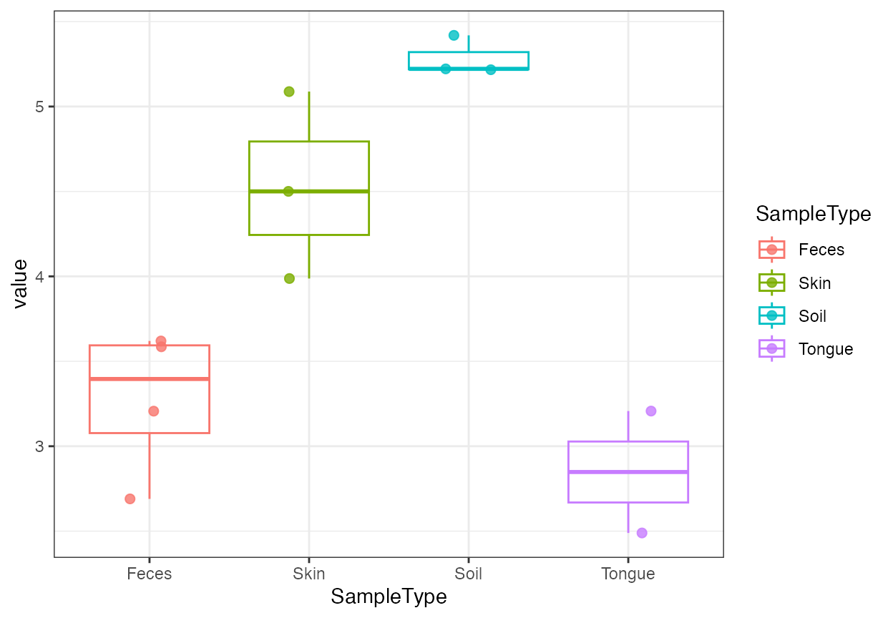
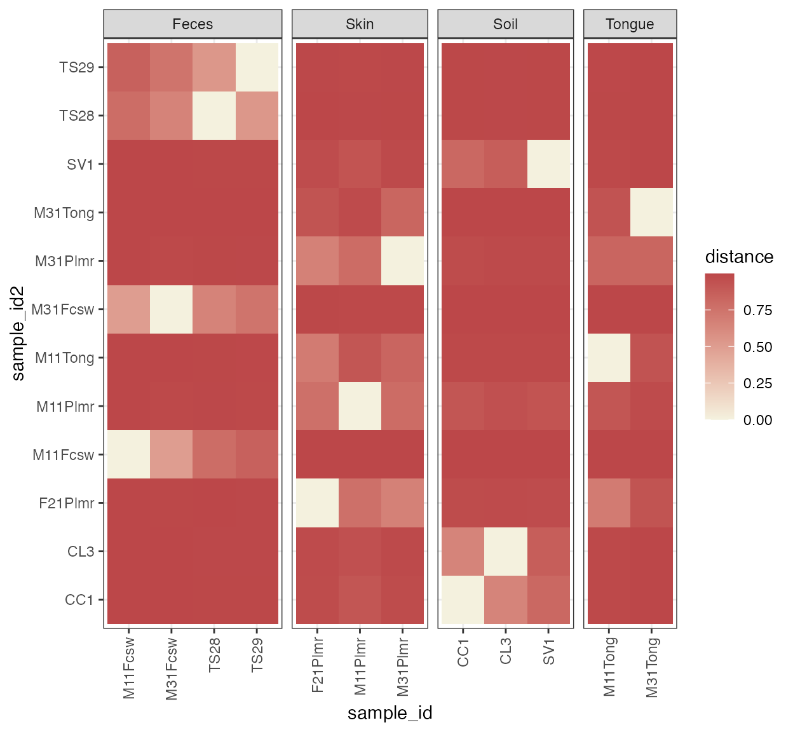
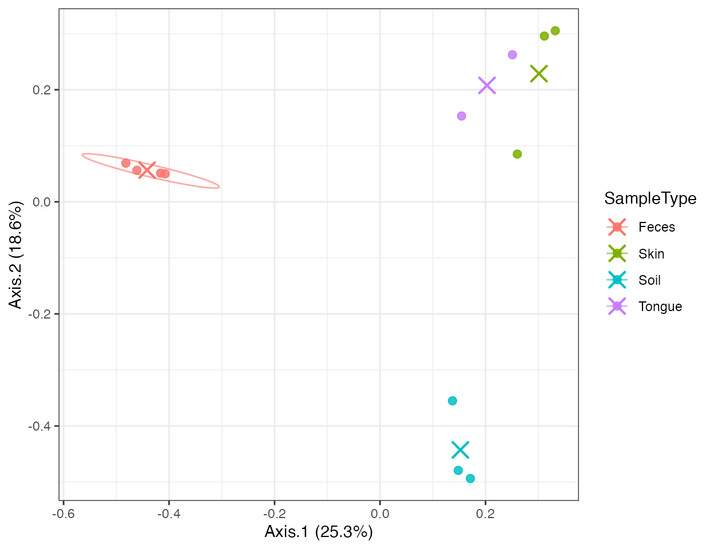
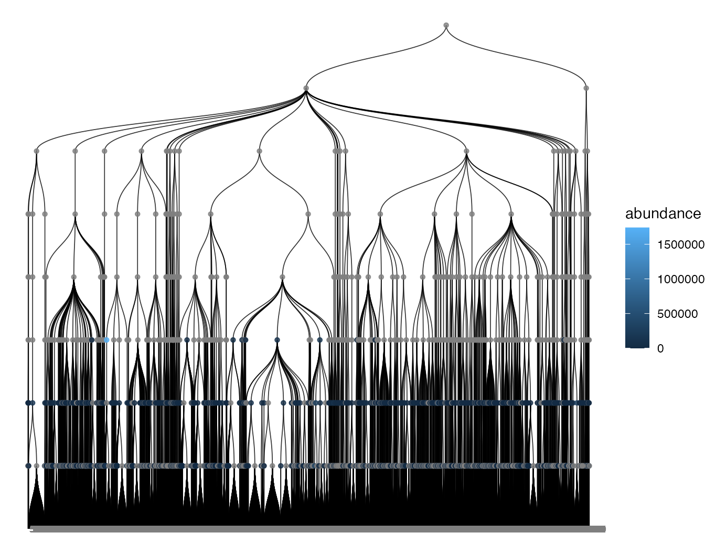

End-to-end microbiome workflow
Xiaotao Shen xiaotao.shen@outlook.com
2026-03-04
Source:vignettes/microbiome_workflow.Rmd
microbiome_workflow.RmdThis article shows a compact tutorial-style workflow built entirely on the package demo data.
library(microbiomedataset)
data("global_patterns", package = "microbiomedataset")
object <- global_patterns
object
#> --------------------
#> microbiomedataset version: 0.99.1
#> --------------------
#> 1.expression_data:[ 19216 x 26 data.frame]
#> 2.sample_info:[ 26 x 8 data.frame]
#> 3.variable_info:[ 19216 x 8 data.frame]
#> 4.sample_info_note:[ 8 x 2 data.frame]
#> 5.variable_info_note:[ 8 x 2 data.frame]
#> --------------------
#> Processing information (extract_process_info())
#> create_microbiome_dataset ----------
#> Package Function.used Time
#> 1 microbiomedataset create_microbiome_dataset() 2022-07-11 01:56:131. Prepare the dataset
Keep only samples with clear biological grouping and taxa with genus annotation.
object <-
object %>%
activate_microbiome_dataset("sample_info") %>%
dplyr::filter(SampleType %in% c("Feces", "Skin", "Tongue", "Soil")) %>%
activate_microbiome_dataset("variable_info") %>%
dplyr::filter(!is.na(Genus))
dim(object@expression_data)
#> [1] 8008 12
table(object@sample_info$SampleType)
#>
#> Feces Freshwater Freshwater (creek) Mock
#> 4 0 0 0
#> Ocean Sediment (estuary) Skin Soil
#> 0 0 3 3
#> Tongue
#> 22. Aggregate and transform abundance
genus_relative <-
transform_taxa(
object,
taxonomic_rank = "Genus",
what = "sum_intensity",
method = "relative"
)
colSums(genus_relative@expression_data)[1:5]
#> CL3 CC1 SV1 M31Fcsw M11Fcsw
#> 1 1 1 1 1Export a long table for downstream plotting or modeling:
genus_table <- melt_taxa(
object,
taxonomic_rank = "Genus",
relative = TRUE
)
head(genus_table[, c("sample_id", "Genus", "abundance")])
#> sample_id Genus abundance
#> 1 CC1 4-29 0.000641909
#> 2 CC1 4041AA30 0.000000000
#> 3 CC1 A17 0.907659258
#> 4 CC1 Abiotrophia 0.000000000
#> 5 CC1 Acaryochloris 0.000000000
#> 6 CC1 Acetivibrio 0.0000000003. Quantify diversity
alpha <- calculate_alpha_diversity(object, metric = "shannon")
beta <- calculate_beta_diversity(object, method = "bray")
head(as_tibble_diversity(alpha))
#> # A tibble: 6 × 9
#> sample_id value Primer Final_Barcode Barcode_truncated_plus_T
#> <chr> <dbl> <fct> <fct> <fct>
#> 1 CL3 5.22 ILBC_01 AACGCA TGCGTT
#> 2 CC1 5.22 ILBC_02 AACTCG CGAGTT
#> 3 SV1 5.42 ILBC_03 AACTGT ACAGTT
#> 4 M31Fcsw 3.21 ILBC_04 AAGAGA TCTCTT
#> 5 M11Fcsw 2.69 ILBC_05 AAGCTG CAGCTT
#> 6 M31Plmr 3.99 ILBC_07 AATCGT ACGATT
#> # ℹ 4 more variables: Barcode_full_length <fct>, SampleType <fct>,
#> # Description <fct>, class <chr>
plot_alpha_diversity(alpha, x = "SampleType", color_by = "SampleType")
annotation <- stats::setNames(
as.character(object@sample_info$SampleType),
object@sample_info$sample_id
)
plot_beta_diversity(beta, annotate_by = annotation, cluster = TRUE)
4. Run ordination
pcoa <- run_ordination(object, method = "PCoA", distance_method = "bray")
head(as_tibble_ordination(pcoa))
#> # A tibble: 6 × 10
#> Axis.1 Axis.2 sample_id Primer Final_Barcode Barcode_truncated_plus_T
#> <dbl> <dbl> <chr> <fct> <fct> <fct>
#> 1 0.148 -0.479 CL3 ILBC_01 AACGCA TGCGTT
#> 2 0.171 -0.494 CC1 ILBC_02 AACTCG CGAGTT
#> 3 0.137 -0.355 SV1 ILBC_03 AACTGT ACAGTT
#> 4 -0.482 0.0690 M31Fcsw ILBC_04 AAGAGA TCTCTT
#> 5 -0.416 0.0512 M11Fcsw ILBC_05 AAGCTG CAGCTT
#> 6 0.312 0.296 M31Plmr ILBC_07 AATCGT ACGATT
#> # ℹ 4 more variables: Barcode_full_length <fct>, SampleType <fct>,
#> # Description <fct>, class <chr>
plot_ordination(
pcoa,
color_by = "SampleType",
ellipse_by = "SampleType",
centroid_by = "SampleType"
)
5. Attach and visualize trees
tree_object <- convert2microbiome_dataset(convert2phyloseq(object))
melt_tree(tree_object, tree = "taxa_tree")[1:6, 1:5]
#> tree parent node label nodeClass
#> 1 taxa_tree 9486 1 5011 variable_id
#> 2 taxa_tree 9487 2 5009 variable_id
#> 3 taxa_tree 9488 3 5008 variable_id
#> 4 taxa_tree 9488 4 5010 variable_id
#> 5 taxa_tree 9489 5 5006 variable_id
#> 6 taxa_tree 9489 6 5007 variable_id
plot_tree(
tree_object,
tree = "taxa_tree",
color_by = "abundance",
taxonomic_rank = "Phylum"
)
6. Export attachments for external tools
ref_seq <- Biostrings::DNAStringSet(rep("ACGT", nrow(tree_object@variable_info)))
tree_object <- replace_ref_seq(tree_object, value = ref_seq)
fasta_file <- tempfile(fileext = ".fasta")
tree_file <- tempfile(fileext = ".nwk")
export_ref_seq(tree_object, fasta_file)
export_tree(tree_object, tree_file, tree = "taxa_tree", format = "newick")
file.exists(fasta_file)
#> [1] TRUE
file.exists(tree_file)
#> [1] TRUESummary
This workflow shows the intended layering of
microbiomedataset:
- start with a synchronized microbiome object;
- use tidy verbs and explicit microbiome verbs for filtering and aggregation;
- compute diversity and ordination inside the same object ecosystem;
- move trees and sequences in and out when needed.